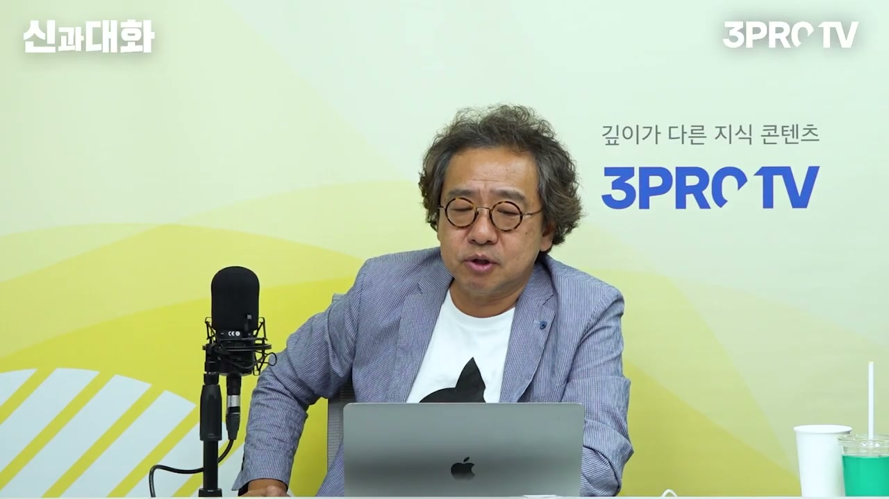
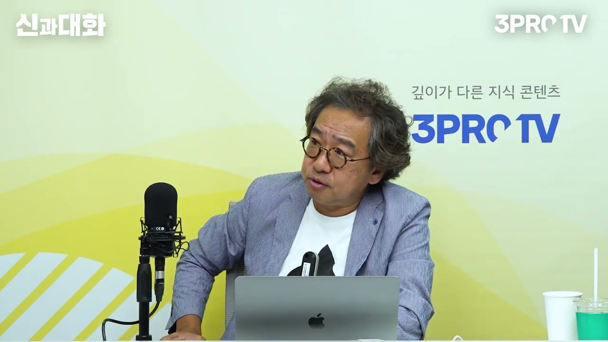
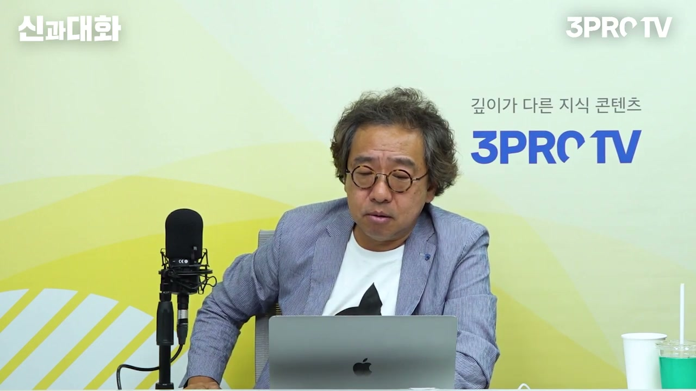
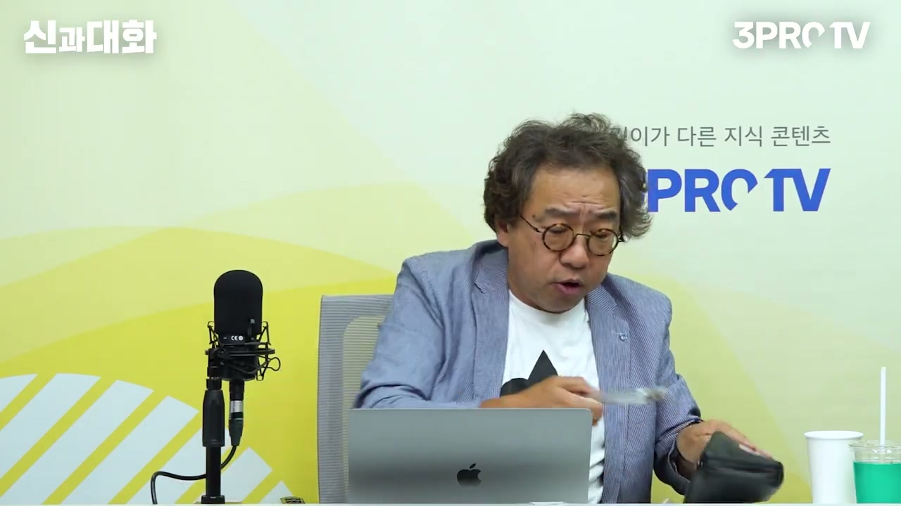
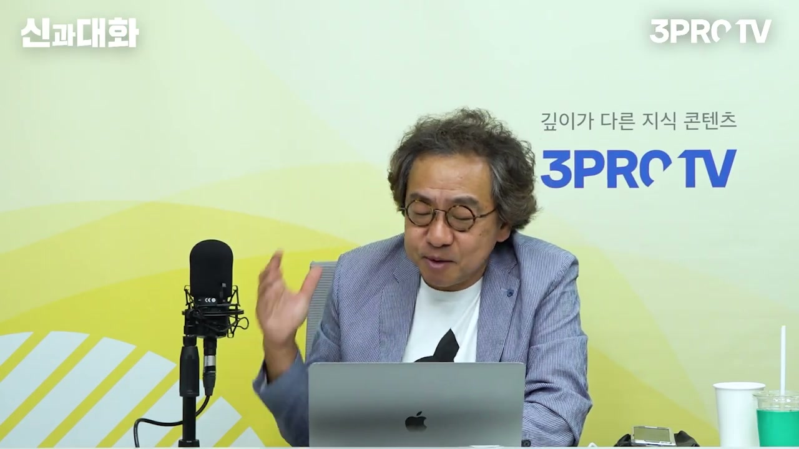
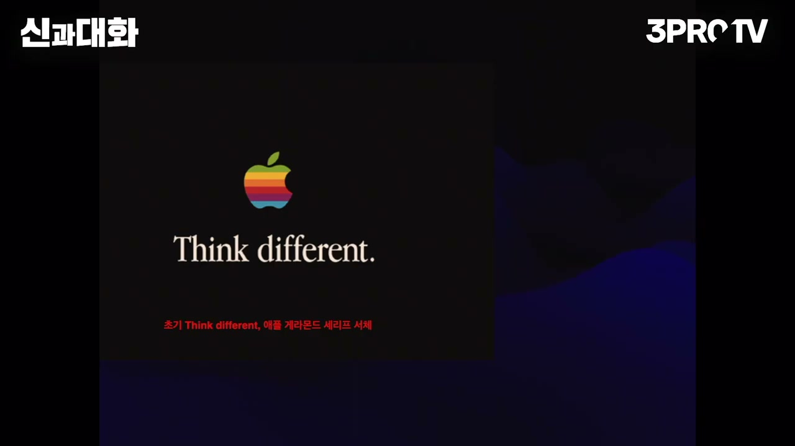
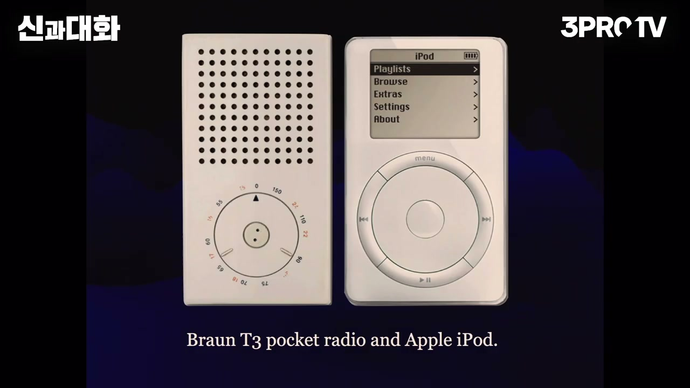
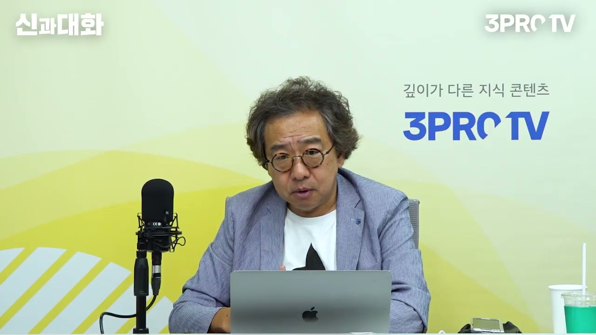
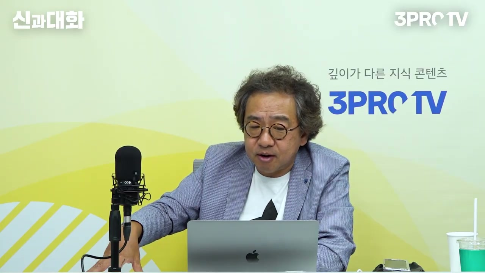

이 글은 전체 3편 중 1편입니다. 긴 영상을 주제 흐름에 맞춰 나누어 정리했습니다.
이 글은 전체 3편 중 1편입니다.
채널: 삼프로TV 3PROTV | 길이: 1:30:47 | 날짜: 2023-07-08
도입부는 삼프로TV의 기존 정체성과 다른 손님을 모셨다는 강조로 시작한다. 진행자는 보통 투자, 금융, 경제권 인사를 초대했지만 이번에는 문화심리학자 김정운 교수를 모셨다고 설명한다. 김 교수는 이 분야에서 진행자가 가장 존경하는 인물 중 한 명으로 소개되고, 겉으로는 발랄하고 가벼워 보이지만 실제로는 깊이가 있는 사람이라는 평가를 받는다. 김 교수는 자신이 정말 오랜만에 방송에 나왔다고 인정하며, 거의 10년 가까이 이런 공개 활동을 하지 않았다고 말한다. 그는 섬에서 혼자 산 지 8년 정도 되었고, 그 시간 동안 책을 썼으며, 출판사가 책에 들어간 돈이 많아 마케팅을 해야 한다고 하자 삼프로TV에 먼저 나오게 되었다고 설명한다.
김 교수의 책은 일반 독서 시장에서 흔한 얇은 책이 아니라 매우 두껍고 가격도 만만치 않은 책으로 소개된다. 진행자는 책이 1,000쪽 가까이 되기 때문에 지하철에서 들고 다니며 읽기에는 어렵지 않겠냐고 걱정한다. 김 교수는 오히려 그 무게와 존재감을 농담으로 받아들이며, 폼을 내기 위해서는 장식도 하고 힘든 것도 감수하지 않느냐고 말한다. 그는 이 책이 많이 팔리되 아무도 읽지 않는 책이 되는 것과, 정말 많은 사람이 읽었지만 많이 팔리지 않는 책 중 무엇이 더 좋으냐는 질문에, 사람들 집에 장식으로라도 많이 가 있으면 좋겠다고 답한다. 다만 가끔 펼쳤을 때 괜찮은 구절이 많다는 점은 보증하겠다고 덧붙인다.

진행자는 김 교수가 10년 동안 무엇에 몰두했는지 맛보기 주제를 중심으로 들어보자고 제안한다. 김 교수는 책 전체의 흐름 중 하나로 바우하우스를 꺼낸다. 처음에는 “바우하우스가 개집인가”라는 농담 섞인 반응도 나오지만, 김 교수는 독일어 어원에서 바우가 짓는다는 뜻, 하우스가 집이라는 뜻이라고 풀어준다. 이름만 보면 집을 짓는 학교처럼 보이지만, 정작 바우하우스의 정체가 무엇인지는 오래 논쟁되어 왔다고 말한다. 건축학교냐, 디자인학교냐, 산업디자인의 출발점이냐라는 논쟁 속에서 김 교수는 그것을 “창조학교”라고 새롭게 규정한다.

바우하우스는 바이마르에서 6년, 데사우에서 7년, 베를린에서 1년 정도 존재하며 계속 이동했다. 김 교수는 이 학교가 쫓겨 다닌 학교였다고 설명한다. 독일이 1차 세계대전과 2차 세계대전 사이의 혼란기를 겪던 시기였고, 학생들은 좌파적 성향을 많이 띠었다. 정권이 보수화되고 나치가 힘을 얻으면서 학교는 점점 압박을 받았고, 결국 베를린에서 사립학교 형태로 잠시 있다가 사라졌다. 그런데도 2019년 바우하우스 100주년은 전 세계 디자인·건축계의 거대한 문화 이슈가 되었고, 김 교수는 원래 그때 책을 내고 싶었지만 코로나로 현지 자료 수집이 늦어졌다고 말한다.
김 교수는 바우하우스가 왜 한국인에게 중요한지를 아파트에서 찾는다. 한국은 세계적으로 보기 드문 아파트 공화국이고, 아파트가 부의 상징이 되는 특이한 사회다. 그는 아파트의 중요한 원형을 르 코르뷔지에와 그로피우스 계열의 근대 건축 실험에서 본다. 그로피우스가 베를린에 만든 그로피우스슈타트 같은 아파트 단지는 독일에서는 우범지대나 슬럼의 상징에 가까운데, 한국에서는 아파트 단지가 부와 안정의 상징이 된다. 같은 공간 형식이 독일과 한국에서 정반대의 문화적 의미를 갖는다는 점이 핵심이다.
김 교수는 1970~80년대 한국에서 불렀던 “양옥집”도 바우하우스와 연결된다고 설명한다. 평평한 지붕, 옥상, 수평적인 박스형 집은 이전의 경사진 지붕이나 기와집과는 다른 감각을 보여준다. 그는 평평한 지붕을 쓰기 시작한 원천을 바우하우스적 근대 건축에서 찾는다. 이런 건축 형식은 단순히 집의 모양이 아니라 생활양식과 미적 감각의 변화를 의미한다. 한국인은 바우하우스를 따로 공부하지 않아도 이미 그 결과물 속에서 살아왔다는 것이 김 교수의 판단이다.

김 교수는 자신의 전작 『에디톨로지』를 이야기하며 창조론을 풀어낸다. 그는 “창조는 편집이다”라는 메시지를 가장 중요하게 생각했다고 말한다. 창조는 가만히 있다가 어느 순간 갑자기 튀어나오는 것이 아니라, 서로 다른 것들을 연결하고 배치하면서 생겨나는 새로운 의미다. 이때 생겨나는 것은 단순한 결과물이 아니라, 서로 다른 영역을 잇는 메타언어다. 그는 사람들이 편집을 짜깁기나 잘라 붙이기로 오해할까 걱정했지만, 자신이 말하는 편집은 전혀 다른 구석에 있던 것들을 연결해 새로운 질서를 만드는 과정이다.

김 교수가 바우하우스를 강하게 붙잡게 된 첫 계기는 애플이었다. 그는 자신이 애플 팬이며, 매킨토시 컴퓨터를 처음부터 쓴 사람이고 애플 기기를 거의 다 샀다고 말한다. 애플의 키노트 프로그램은 파워포인트와 비교가 안 될 정도로 훌륭하다고 평가한다. 아이폰이 처음 나왔을 때 삼성 사장단을 대상으로 강연한 경험도 이야기한다. 당시 삼성은 옴니아를 내놓았고, 김 교수는 애플과 비교하며 비판했지만, 한 임원이 구체적으로 무엇이 문제인지 말해달라고 하자 자신이 단순히 불평만 하고 있었다는 충격을 받았다고 회상한다.
김 교수는 삼성 제품의 기능적 우수성을 부정하지 않는다. 폴더블, 펜 기능 같은 것은 기가 막히게 훌륭하다고 말한다. 그러나 미학적으로는 애플을 따라가지 못한다고 본다. 그는 자신도 국산을 쓰고 싶지만 왜 애플을 선택하게 되는지 묻는다. 기능은 삼성의 팬이 될 수 있을 만큼 뛰어나지만, 심리적 편안함과 미적 일관성은 애플 쪽에 있다는 것이다. 이 대목에서 김 교수의 관심은 기술 성능이 아니라 문화적 감각, 디자인의 계보, 사용자가 느끼는 정서적 안정감으로 이동한다.

김 교수는 스티브 잡스가 소니를 깊이 동경했으며, 애플 디자이너들에게 소니라면 스마트폰을 어떻게 만들지 생각해보라고 했다는 사례를 든다. 애플이 삼성에 카피캣 소송을 제기했을 때, 삼성 측 변호사가 소니 디자인과 닮은 자료를 찾아왔다는 이야기도 이어진다. 김 교수의 해석은 단순히 “애플도 베꼈다”가 아니다. 잡스는 소니에서 아름답다고 여긴 요소들을 모아 애플의 제품 언어로 다시 편집했다. 그래서 애플의 독창성은 무에서 생긴 것이 아니라, 좋은 것들의 선택과 재배치에서 나온 창조라는 설명이다.
잡스의 검은 터틀넥과 청바지도 같은 맥락에서 다뤄진다. 김 교수는 잡스가 소니의 단체복에서 영감을 받아 애플도 단체복을 입히려 했지만 직원들이 반발했다는 일화를 소개한다. 이후 잡스는 소니 유니폼을 만든 이세이 미야케에게 자신만의 아이덴티티를 구성할 수 있는 옷을 부탁했고, 그것이 터틀넥과 청바지의 이미지로 굳어졌다고 설명한다. 잡스가 소니 매장에 들러 카탈로그를 보곤 했고, 그 카탈로그를 챙겨주던 직원을 나중에 애플에 취직시켰다는 이야기도 나온다. 애플의 아이덴티티는 제품뿐 아니라 프레젠테이션, 옷, 언어, 태도까지 여러 요소의 편집으로 만들어졌다는 점을 보여주는 사례다.

김 교수는 애플의 디자인 계보를 브라운과 디터 람스로 확장한다. 브라운 T3 포켓 라디오와 애플 아이팟의 유사성은 대표적인 사례로 제시된다. 브라운 스피커와 아이맥, 브라운 라디오와 애플 제품의 형태, 알루미늄 껍데기와 단순한 조형 언어가 서로 닮았다는 설명도 이어진다. 조나단 아이브가 브라운의 흔적을 적극적으로 참고했고, 기자들이 왜 그렇게 흉내를 냈느냐고 묻자 아이폰 한 대를 받았다는 식의 농담 섞인 이야기도 언급된다. 김 교수는 이를 표절 비난으로만 보지 않고, 문화적 계보와 편집의 흔적으로 읽는다.

디터 람스와 브라운의 배경에는 울름 조형대학이 있다. 김 교수는 이 학교가 2차 세계대전 이후 미국으로 넘어간 바우하우스 전통을 독일에서 다시 시작해보자는 의도로 만들어진 학교라고 설명한다. 학교는 불과 14년 정도 존재했지만, 브라운과의 산학협력을 통해 현대 제품디자인의 중요한 표준을 만들었다. 울름 조형대학과 브라운이 만든 디자인의 책임자 중 한 사람이 디터 람스였고, 조나단 아이브가 람스와 브라운을 말할 때 그 배경에는 바우하우스의 맥이 놓여 있다. 따라서 애플 디자인을 이해하려면 애플만 보는 것이 아니라 바우하우스, 울름, 브라운까지 이어지는 지식의 계보를 봐야 한다.

김 교수는 과거 애플 컴퓨터나 OS의 알림 표시, 그래픽 요소에도 바우하우스 이미지의 오마주가 숨어 있었다고 설명한다. 오른쪽의 바우하우스 문장에서 인물만 떼어 알림 표시처럼 쓴 사례를 말한다. 사용자는 그것을 특별히 바우하우스라고 의식하지 못하지만, 애플을 통해 바우하우스 디자인은 생활 속으로 스며든다. 김 교수는 애플이 바우하우스를 갑자기 다시 주목받게 만든 중요한 통로였다고 본다. 2019년 바우하우스 100주년이 세계적 이슈가 되었지만, 그는 바우하우스를 디자인이나 건축으로만 해석하면 핵심을 놓친다고 지적한다.
김 교수는 바우하우스의 어마어마한 잠재력을 세계적으로 충분히 설명한 사람이 없었다고 말한다. 그래서 자신의 책이 두꺼워졌다고 설명한다. 바우하우스는 단순한 양식이나 스타일이 아니라, 수십 명의 천재가 한 시기에 몰려 만들어낸 창조적 실험의 장이었다. 그런 학교가 우연히 그렇게 될 수는 없으며, 왜 그런 사람들이 그곳에 모였는지를 설명해야 한다는 문제의식이 있다. 이 점이 그가 바우하우스를 “창조학교”라고 부르는 이유다.

김 교수는 이어 한국에서 어느 순간부터 4차 산업혁명이라는 말을 갑자기 하기 시작했다고 비판한다. 사람들은 1차, 2차, 3차가 무엇인지도 제대로 모르면서 4차를 외우기 시작했다. 그는 다른 나라에서는 이 표현을 한국만큼 많이 쓰지 않는다고 말한다. 독일에서 오래 공부한 사람으로서, 그는 어떤 개념이 유행할 때 먼저 의심해야 한다고 강조한다. 누가 이 말을 만들었고, 어떤 의도로 퍼뜨렸으며, 왜 한국에서만 이렇게 강하게 소비되는지를 따져야 한다는 것이다.
김 교수는 4차 산업혁명이라는 말을 추적해보니 클라우스 슈밥과 다보스포럼이 나온다고 말한다. 그는 슈밥을 학자라기보다 비즈니스맨으로 평가한다. 다보스포럼 역시 세계적 고급 사교 모임에 가깝고, 모여서 경제 이야기는 하지만 실제 프로젝트나 구체적 산출물이 잘 나오지 않는다는 비판을 소개한다. 독일에는 이미 2011년경부터 인더스트리 4.0이라는 말이 있었고, 카게르만이라는 인물이 제조업 위기 대응 맥락에서 이야기했다고 설명한다. 이는 독일 제조업이 변화에 적응하고 살아남기 위해 정부가 대책을 세워야 한다는 정책 언어였지, 거대한 문명사적 혁명을 뜻하는 말은 아니라는 해석이다.
김 교수의 마지막 주장은 개념의 실용성에 관한 것이다. 산업혁명이라고 부르면 사람들은 증기기관이 사회를 바꾸었다고 생각하지만, 사실은 사람들이 증기기관을 만들었다. 즉 본질은 기계가 아니라 지식, 개념, 인간의 행위다. 그는 좋은 개념과 나쁜 개념을 가르는 기준을 “내가 무엇을 해볼 수 있느냐”로 제시한다. “창조”라고만 하면 너무 멀고 추상적이지만, “창조는 편집”이라고 하면 내가 실제로 편집을 해볼 수 있다. 그러므로 좋은 개념은 사람을 압도하는 말이 아니라, 행동하게 만드는 말이다.
“바우하우스는 창조학교다.”
“창조는 편집이다.”
“의심하기.”
“산업혁명이 아니고 본질은 지식 혁명이다.”
“편집한다는 건 내가 할 수 있는 거예요.”
“좋은 개념은 내가 행위할 수 있게 한다.”
이번 1편의 핵심은 김정운 교수가 바우하우스를 통해 창조의 본질을 다시 설명하는 방식이다. 그는 창조를 천재의 번뜩임이나 완전히 새로운 발명으로 보지 않고, 서로 다른 지식과 사물과 문화적 계보를 연결하는 편집으로 본다. 바우하우스, 애플, 소니, 브라운, 울름 조형대학, 삼성과 애플의 차이, 4차 산업혁명 비판은 모두 이 하나의 논리로 묶인다. 좋은 개념은 사람을 위압하지 않고, 내가 무엇을 해볼 수 있게 만드는 개념이라는 결론이 이 파트의 가장 실용적인 시사점이다.
댓글
GitHub 이슈 기반 댓글 시스템입니다.